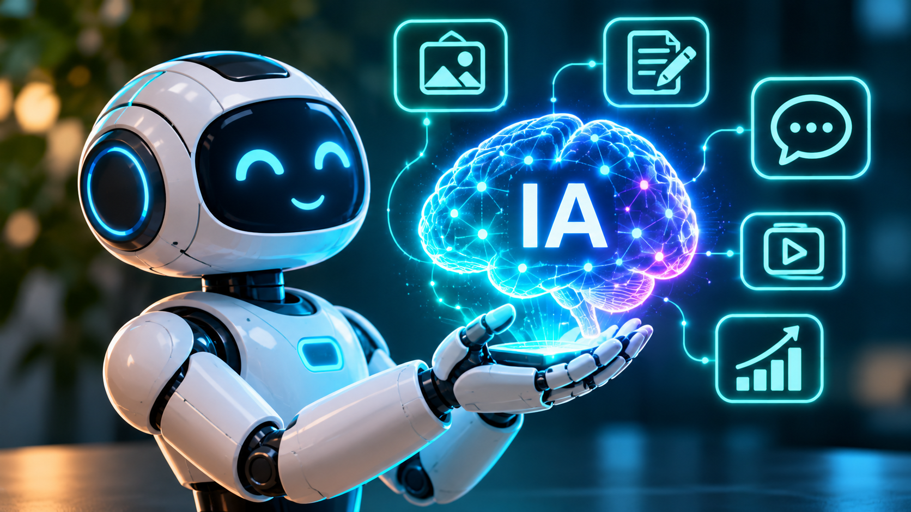

Découvrir l'intelligence artificielle
Explore les possibilités de l'intelligence artificielle et apprends à l'utiliser au quotidien.

1. Qu'est-ce que l'intelligence artificielle ?
L'intelligence artificielle (IA) est une technologie qui permet aux machines de réaliser certaines tâches qui nécessitent habituellement l'intelligence humaine.
À quoi sert l'IA ?
- Répondre à des questions.
- Traduire des textes.
- Reconnaître des images.
- Aider à rédiger des documents.
- Proposer des recommandations.
2. Les différents types d'intelligence artificielle
Il existe plusieurs formes d'intelligence artificielle utilisées dans notre quotidien.
Quelques exemples
- Les assistants virtuels : ils répondent à nos questions.
- Les IA génératives : elles créent du texte, des images ou des idées.
- La reconnaissance vocale : elle comprend les commandes vocales.
- Les systèmes de recommandation : ils proposent des vidéos, des musiques ou des produits.
3. Les avantages et les limites de l'IA
Les avantages
- Gagner du temps.
- Faciliter certaines tâches.
- Apprendre de nouvelles choses.
- Stimuler la créativité.
Les limites
- L'IA peut donner des informations incorrectes.
- Elle ne remplace pas le jugement humain.
- Elle peut reproduire des erreurs ou des préjugés.
- Il faut faire attention aux données personnelles partagées.
4. Les bonnes pratiques pour utiliser l'IA
L'intelligence artificielle est un outil utile, mais il est important de l'utiliser de manière responsable.
Quelques conseils
- Formuler des demandes claires et précises.
- Vérifier les informations données par l'IA.
- Ne pas partager de données personnelles ou confidentielles.
- Garder un esprit critique.
- Utiliser l'IA comme une aide et non comme un remplacement de sa réflexion.